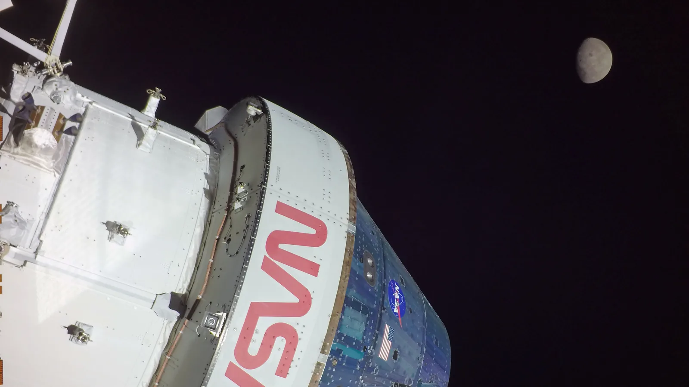

Ciência & Espaço
Fusão estelar em Andrômeda: o que o Webb revelou sobre Bao
NASA reúne observações para reconstruir a fusão que originou Bao. A divulgação é de novembro de 2026; a erupção observada ocorreu em 2025.
Notícias, análises e explicações para acompanhar este universo.
NASA reúne observações para reconstruir a fusão que originou Bao. A divulgação é de novembro de 2026; a erupção observada ocorreu em 2025.

Artemis II voou de 1º a 10 de abril de 2026, sem pouso lunar. Entenda como o voo se distingue dos próximos testes e das metas para a superfície.